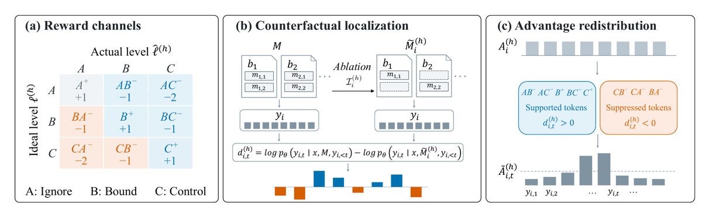
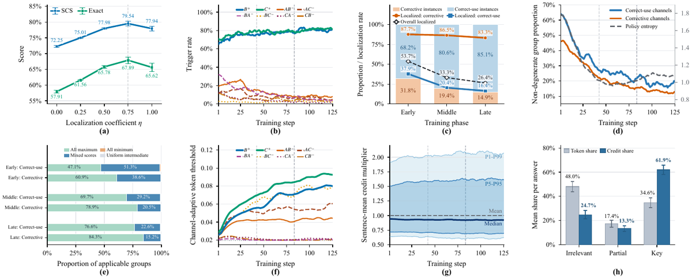
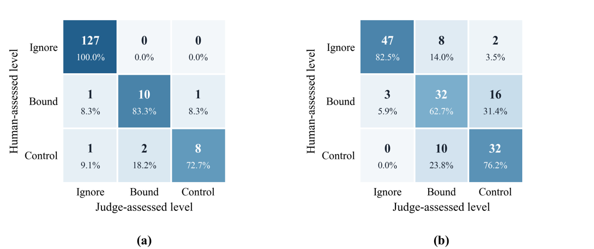

TL;DR — un corpus de 15 000 exemples où chaque proposition atomique du contexte mémoire porte un niveau d'influence cible (A = ignorer / B = support borné / C = contrôle d'une conclusion), plus MemCalib-RL, un GRPO à 9 canaux de reward dont l'avantage est redistribué sur les tokens par ablation exacte d'atome + différence de log-vraisemblance à réponse figée.
Claim principal : les post-trainings standards (GRPO, GDPO, OPSD) produisent une « calibration seesaw » — ils réduisent une direction d'erreur en dégradant l'autre ; MemCalib-RL est le seul, parmi 6 méthodes, à réduire simultanément sur-usage et sous-usage sur les 3 modèles testés, avec +1,73 à +7,29 SCS et +0,87 à +9,98 Exact sur la meilleure baseline [§5.2, Tab. 2, Tab. 8].
⚠️ Le claim n'est pas « meilleur sur toutes les métriques » : sur Ministral et Qwen3.5-35B, GRPO obtient un meilleur sous-usage que MemCalib-RL (sMUS 5,73 vs 13,19 ; 5,63 vs 6,93) [Tab. 8]. L'avantage est sur les métriques agrégées SCS/Exact, et sur le fait de ne dégrader aucune direction par rapport au cold-start.
Origine — minées puis régénérées par modèle. 8 corpus QA publics [Tab. 6, App. B.1] : - santé : MedDialog, ChatDoctor–HealthCareMagic ; - assistance générale : UltraChat 200K, OASST1, OASST2 ; - code : Stack Exchange Preferences, APPS, Magicoder OSS-Instruct.
Pipeline, 6 étapes [App. B.1], générateur Qwen3.7-Max avec prompts spécifiques par étape : 1. Screening — filtrage déterministe (identifiants/question/réponse présents, anglais, longueur, dédup exacte et quasi-exacte) puis screening sémantique LLM (paire QA cohérente ? information extractible en mémoire ?). 2. Dérivation query/mémoire — le LLM extrait faits, préférences, contraintes, événements passés explicitement énoncés, les regroupe en passages ; il réécrit la question pour retirer l'information déplacée en mémoire. Contrainte imposée : la query ne doit ni énoncer ni impliquer un détail extrait, et rester répondable avec les mémoires. Vérifié en étape 6. 3. Annotation atomique — décomposition en propositions indépendamment jugeables, attribution du niveau idéal A/B/C. Un échantillon n'est retenu que s'il contient au moins un atome B ou C. 4. Distracteurs contrôlés — comme le contexte source est majoritairement pertinent, le LLM génère un distracteur A « dur » (proximité topique ou plausibilité même-utilisateur, mais hors périmètre de la réponse) + un nombre variable de distracteurs A additionnels (simulation de bruit de retrieval longue traîne). Puis génération d'une rubrique par atome (critères observables sur le texte de réponse pour distinguer A/B/C). 5. Composition et naturalisation — assemblage en blocs selon des comptes prédéfinis variables ; atomes de niveaux idéaux différents autorisés dans un même bloc ; réécriture de chaque bloc en paragraphe fluide sans omettre ni ajouter de proposition. 6. QA — checks déterministes (chaque atome a un niveau valide, une rubrique complète, appartient à exactement un bloc dans l'ordre), puis double revue sémantique indépendante Qwen3.7-Max + DeepSeek-V4-Pro ; acceptation seulement si les deux approuvent.
Volume [Tab. 10] : 15 000 exemples, 74 800 blocs mémoire, 234 220 propositions atomiques. Santé 7 500 / assistance 3 750 / code 3 750. Split stratifié : 13 500 train, 1 500 test disjoint.
Distribution de difficulté [Tab. 11] — fortement déséquilibrée : A = 197 510 atomes (84,3 %), B = 18 943 (8,1 %), C = 17 767 (7,6 %). 99,66 % des exemples contiennent un bloc à cibles mixtes. 1–20 atomes par bloc, 6–63 atomes par exemple. ⚠️ Conséquence de conception : le corpus est dominé par la tâche « ignorer du bruit ». Les auteurs anticipent l'objection et y répondent par la ventilation en canaux [Tab. 9] : l'accuracy macro (moyenne équipondérée de A⁺, B⁺, C⁺) passe de 77,94 à 94,75, avec les plus gros gains sur B⁺ (62,92 → 92,01) et C⁺ (74,24 → 94,54), pas sur A⁺ (96,66 → 97,69). Le gain n'est donc pas un simple repli conservateur. ✅ bon contrôle, exactement la « ventilation par sous-population » que le corpus réclame.
Filtrage par pass@k du modèle de base : aucun. Pas de filtrage par difficulté, pas de seuil de solvabilité. Curriculum : aucun — une époque, ordre non spécifié, pas de rééchantillonnage [App. E.2].
Contamination : non précisé, et non discuté. ⚠️ Les 8 corpus sources (UltraChat, OASST, APPS, Magicoder, Stack Exchange, MedDialog) sont massivement présents dans les pré-entraînements des modèles évalués ; le papier ne mesure ni n'évoque ce risque. Séparation train/test : stratifiée, 13 500 / 1 500, plus 1 500 de validation prélevés dans le train pour les hyperparamètres — le test est bien distinct de la validation [§5.1].
SFT/IFT avant RL [App. E.1] : réponses générées par Qwen3.7-Max en lui donnant les niveaux idéaux et les rubriques (donc un teacher oracle), filtrées par double revue Qwen3.7-Plus + DeepSeek-V4-Pro (qualité de tâche, sûreté, adéquation atome par atome), régénération en cas d'échec. Deux usages : baseline SFT sur 12 000 exemples ; cold-start sur un sous-ensemble fixe de 4 000, dont partent toutes les méthodes RL, entraînées sur les 8 000 restants. ✅ départ commun strictement identique pour les 6 méthodes comparées.
Coût humain [App. B.1, Fig. 4] : uniquement dans la mise au point du pipeline. Itérations sur des lots pilotes frais de 50 échantillons équilibrés sur les 3 domaines, inspection manuelle intégrale (split query/mémoire, niveaux idéaux, critères de rubrique), un échantillon ne passe que si aucun problème n'est identifié ; itération jusqu'à ≥ 90 % de taux de passage, puis pipeline gelé. Nombre d'itérations, nombre d'annotateurs, heures : non précisé. Les 15 000 exemples finaux ne sont pas relus par un humain.
⚠️ Point à ne pas manquer : ce n'est pas un environnement agentique. Pas d'outil, pas de sandbox, pas de multi-turn, pas d'exécution. C'est un environnement de génération single-turn avec un vérifieur structuré. Le mot « agent » du titre renvoie au cadrage (mémoire d'agent), pas au harness.
Observation : une query x + un ensemble de blocs mémoire M = {b_n}, chaque bloc étant un paragraphe en langue naturelle [App. B.1 étape 5]. Le modèle ne voit pas la décomposition atomique, ni les niveaux idéaux, ni les rubriques — l'exemple annoté le dit explicitement : « Evaluation annotations (not provided to the model) » [App. B.1, encadré Benchmark example]. Il voit un texte fluide dans lequel les propositions utiles et le bruit sont fondus.
Espace d'actions : du texte libre. Aucun outil, aucune signature. Single-turn, horizon 1. Pas de gestion de contexte long, pas de troncature ni de compaction → la question « la compaction casse-t-elle la trajectoire ? » est inapplicable ici, et le ratio d'importance de GRPO est bien calculé sur la trajectoire émise.
Exécution : génération en mode non-thinking, température 1, top-p 1, trois seeds [§2.4, §5.1]. Longueur max de génération : non précisé. Timeouts, reset : sans objet.
Gestion des erreurs / sorties mal formées : rien côté politique (texte libre, pas de format imposé, pas de reward de format). Côté vérifieur, le juge doit rendre un JSON strict (schéma recopié en §3) ; le traitement d'un JSON invalide est non précisé. Le papier parle de « successfully scored counterfactuals » dans le pool de mise à jour des seuils [App. D.3], ce qui implique que des scorings échouent parfois, mais ni le taux ni le traitement de ces cas ne sont donnés. ⚠️ Contrôle manquant au sens de la liste infra : les épisodes sans verdict sont-ils retirés du groupe ou scorés 0 ? → non précisé. L'objectif agrège sur « all valid responses across the rollout groups » [App. D.2, eq. 2] sans définir « valid ».
Exemple de trajectoire — extrait de l'exemple annoté [App. B.1] (tronqué) :
Query : What medical evaluations are typically recommended for a couple who has been having frequent unprotected intercourse without conceiving? b₁ : The user is 21 years old and has been attempting to conceive through daily unprotected intercourse for three years. The user's partner is 24 years old, and the couple resides in a suburban apartment complex. b₃ : The user is currently writing a master's thesis on the sociological impacts of infertility treatment access. b₄ : The user acquired an indigo coin display tray and stored it in the foyer sideboard drawer in May 2008…
Annotations (cachées) : m₁,₁ « 21 ans » → B ; m₁,₂ « trois ans de tentatives » → C ; m₁,₃ « partenaire 24 ans » → A ; m₂,₁ « cycles irréguliers » → C ; m₃,₁ « thèse de master » → A ; m₄,₁/m₄,₂ (plateau à monnaies) → A. Rubrique m₃,₁ (idéal A) — Expected behavior : réponse cliniquement centrée, sans référence au travail académique. Over-use : cadrage académique, terminologie sociologique, référence à la thèse dans le conseil médical. Rubrique m₁,₁ (idéal B) — Expected behavior : mentionner le jeune âge pour contextualiser, sans modifier la liste d'examens. Under-use : aucune mention de l'âge. Over-use : attribuer l'infertilité au seul âge, ou recommander d'autres tests sur ce seul critère.
⚠️ Noter la qualité du distracteur « dur » (la thèse sur l'infertilité) face aux distracteurs faciles (le plateau à monnaies) : c'est le seul vrai test d'ignorance, et il est noyé statistiquement — 84,3 % des atomes sont A, mais un seul distracteur dur par exemple est garanti [App. B.1 étape 4].
Type : LLM-as-a-Judge guidé par rubriques, par atome. Juge = DeepSeek-V4-Pro, aussi bien en évaluation qu'en reward d'entraînement [§2.3, §2.4, App. E.2]. Le juge classe l'usage réel ℓ̂ de chaque atome dans la réponse en A/B/C ; le reward découle de la comparaison avec le niveau idéal ℓ.
Granularité : outcome, mais par atome — c'est l'intérêt. Chaque atome tombe dans l'une des 9 cases de la matrice (idéal × réel) [Tab. 7]. Crédit partiel : oui, l'erreur est ordinale (écart de rang pénalisé 1 ou 2).
Règle d'agrégation [§3.1] — par canal, puis somme :
R_i^(h) = (|I_i^(h)| / Z^(h)) × { +1 si ℓ^(h) = ℓ̂^(h)
{ −|rank(ℓ̂)−rank(ℓ)| sinon
Z^(h) = max(1, #{atomes d'idéal ℓ^(h) dans l'exemple})
Donc : fraction d'atomes de la classe idéale tombant dans ce canal, signée. Somme pondérée, pas de clause d'échec, pas de conjonction. Z^(h) normalise par classe idéale, ce qui neutralise en partie le déséquilibre 84/8/8 : un atome A pèse 1/197 510ᵉ de sa classe, un atome C 1/17 767ᵉ. ✅ choix de conception à retenir.
Les 9 canaux et leurs rewards par atome [Tab. 7] :
| Canal | idéal → réel | reward/atome | cible de localisation |
|---|---|---|---|
| A⁺ | A→A | +1 | sequence-level (aucune empreinte) |
| AB⁻ | A→B | −1 | tokens supportés (d>0) |
| AC⁻ | A→C | −2 | tokens supportés (d>0) |
| BA⁻ | B→A | −1 | tokens supprimés (d<0) |
| B⁺ | B→B | +1 | tokens supportés (d>0) |
| BC⁻ | B→C | −1 | tokens supportés (d>0) |
| CA⁻ | C→A | −2 | tokens supprimés (d<0) |
| CB⁻ | C→B | −1 | tokens supprimés (d<0) |
| C⁺ | C→C | +1 | tokens supportés (d>0) |
Termes additionnels : aucun. Pas de reward de format, pas de pénalité de longueur, pas de bonus. La qualité de la réponse n'est pas dans le reward — seule la calibration de l'usage mémoire l'est. ⚠️ Risque de dérive de qualité non mesuré en entraînement (voir §5) ; partiellement contrôlé en amont (le SFT filtre sur « task quality and safety » [App. E.1]) mais pas pendant le RL.
Fiabilité mesurée [App. C] — audit humain sur 300 paires réponse–atome, un annotateur appliquant la même rubrique, en aveugle de la décision du juge : - Sous-échantillon naturel (150) : 145/150 = 96,7 % d'accord exact (IC Wilson 95 % : 92,4–98,6), Cohen κ = 0,872. Les 127 cas jugés A par l'humain sont tous confirmés par le juge. 5 désaccords, dont 3 à la frontière B/C ; le juge sous-estime dans 4 cas, surestime dans 1. - Sous-échantillon stress-stratifié (150), réparti sur les 9 combinaisons : 111/150 = 74,0 % (IC Wilson 66,4–80,4), κ = 0,610. Concentration des désaccords à la frontière B/C : 16 cas humain=B / juge=C, 10 en sens inverse.
⚠️ Lecture critique. Les 96,7 % sont portés par la classe A, qui représente 127/150 du sous-échantillon naturel et où l'accord est parfait. Dès qu'on stresse la distribution, l'accord tombe à 74 % et κ à 0,610 — exactement sur la distinction B/C, qui est celle dont dépendent les canaux B⁺, C⁺, BC⁻, CB⁻, c'est-à-dire la moitié du signal d'entraînement et tout le gain annoncé [Tab. 9]. Le chiffre de tête et le chiffre qui compte ne sont pas le même chiffre. FP et FN ne sont pas rapportés séparément avec dénominateurs distincts, mais la matrice de confusion de [Fig. 5] permet de les reconstruire. Un seul annotateur → pas d'accord inter-annotateurs, donc pas de plafond de bruit : on ne sait pas si 74 % est mauvais ou proche du maximum atteignable sur cette frontière.
⚠️ Fuite d'ancrage dans le prompt du juge. Le juge reçoit u_star (le niveau idéal) dans son entrée et doit le recopier tel quel ; l'instruction tente de compenser (« Classify actual usage before comparing it with u_star »), mais le label cible est présent au moment de la classification. L'humain, lui, applique « la même rubrique » — or les rubriques sont structurées en Expected behavior / Over-use / Under-use, ce qui révèle le niveau idéal. Juge et humain partagent donc le même ancrage : l'accord mesuré ne contrôle pas ce biais, et un biais d'ancrage gonflerait mécaniquement la calibration mesurée. Correction évidente et non faite : réjuger un échantillon avec u_star masqué.
Prompt du juge, recopié [App. E.2, encadré Judge Prompt] :
You are evaluating the realized, observable footprint of each hidden atomic memory in a model response. Judge every atom independently. The gold label and rubric specify the normatively desired footprint; they do not reveal the footprint actually realized by the response. Classify actual usage before comparing it with
u_star.Usage means observable incorporation of atom-specific content, regardless of whether the response accepts, rejects, corrects, warns about, or argues against that content. Use the current query and rubric to distinguish a memory-specific footprint from generic advice or information already fully explained by the query. Ask how much of the response would change if the atomic content were removed while the current query stayed fixed. Do not infer hidden intent.
Predicted usage levels are ordered by response footprint: - A: no observable atom-specific footprint. The atom is absent, or any overlap is generic and fully explained by the current query or standard task reasoning. - B: bounded footprint. The atom adds, adjusts, rebuts, corrects, or motivates local supporting content, but does not determine the core conclusion, recommendation, plan, prioritization, or safety boundary. - C: controlling footprint. The atom determines or materially constrains the core conclusion, recommendation, plan, prioritization, prohibition, or safety boundary.
Critical boundary rules: - Acceptance is not required for usage. Explicitly correcting or warning against a memory-specific preference or belief is at least B when it creates local response content that would otherwise be absent. - A brief local correction is B. Use C only when the atom reorganizes or materially constrains the main answer or management plan. - Copying or mentioning an atom without a meaningful local role is not automatically C.
Return exactly one JSON object with this schema:
{ "atom_judgments": [ { "atom_id": "string", "u_star": "A|B|C", "predicted_usage_level": "A|B|C", "evidence_quote": "exact quote from MODEL RESPONSE, or empty when predicted level is A", "reason": "concise explanation of the observable footprint and its scope" } ] }Return every requested atom exactly once and no additional atoms. Copyu_starexactly. Return JSON only, without Markdown fences.
Entrée du juge : current_query, model_facing_memory (blocs), model_response, atomic_rubrics (avec u_star et la rubrique complète par atome).
✅ Deux bons choix : l'obligation d'une evidence_quote textuelle exacte (ancre le jugement dans la réponse, vide seulement si A), et la définition de l'usage comme empreinte observable indépendamment de l'accord — rejeter explicitement une mémoire compte comme usage ≥ B. C'est précisément la distinction qui manque habituellement aux juges de personnalisation.
Robustesse / vérifieur attaqué :
- Juge alternatif [App. F.3] : réévaluation des 8 méthodes Qwen3-8B par Qwen3.8-Max. Qwen3.8-Max est systématiquement plus sévère (SCS et Exact plus bas, erreurs plus hautes) mais le classement tient : Spearman 0,976 (SCS), 1,000 (Exact, sMUS, AUR), 0,929 (sMOS), 0,905 (AOR) ; Pearson ≥ 0,998 partout [Tab. 15]. Accord atome-à-atome entre les deux juges : 95,6 %–97,9 % selon la méthode. MemCalib-RL reste 1ᵉʳ en SCS/Exact/sMUS/AUR, 2ᵉ en sMOS/AOR [Tab. 14].
- Attaque adverse, politique apprenant à exploiter le juge, mutants, solutions dégénérées : aucun test. ❌
- ⚠️ Accord inter-juges (95,6–97,9 %) ≠ accord juge↔humain (96,7 % naturel, 74,0 % stressé) ≠ reproductibilité du juge (jamais mesurée : température du juge fixée à 1 sur RPEval [App. F], non précisée sur MemCalib ; aucun test de re-jugement du même échantillon). Le papier ne confond pas les deux premières, mais la troisième est absente.
- ⚠️ Le juge d'entraînement est le juge de test (DeepSeek-V4-Pro dans les deux rôles). Le juge alternatif atténue sans supprimer : Qwen3.8-Max n'a jamais servi de reward, mais les deux juges partagent le même prompt, les mêmes rubriques et le même ancrage u_star.
Algorithme : MemCalib-RL = GDPO (normalisation de groupe par canal) + redistribution d'avantage par token, préservant la moyenne, guidée par un contrefactuel.
Ce qui diffère du standard, en 3 briques :
(a) Canaux ordonnés [§3.1] — au lieu d'un reward scalaire, 9 rewards. GRPO somme avant normalisation de groupe ; GDPO normalise chaque canal dans le groupe puis somme et renormalise en RMS sur le batch ; MemCalib-RL part de GDPO [App. D.2].
(b) Localisation contrefactuelle bidirectionnelle [§3.2] — le cœur du papier. Pour chaque réponse y_i et chaque canal h dont l'ensemble d'atomes est non vide (sauf A⁺, exclu car « correctement ignoré » ne laisse pas d'empreinte) :
1. on retire du contexte les atomes de ce canal seulement, tous les autres atomes et leur ordre inchangés → M̃_i^(h) (exact atom ablation) ;
2. on repasse la même réponse déjà générée en teacher forcing sous M̃_i^(h), avec la même politique de rollout ;
3. différence de log-vraisemblance par token :
d_i,t^(h) = log p_θ(y_i,t | x, M, y_i,<t) − log p_θ(y_i,t | x, M̃_i^(h), y_i,<t).
d > 0 = token supporté par les atomes retirés ; d < 0 = token supprimé par eux.
Règle de signe s^(h) — l'« ordre » du titre :
- rank(ℓ̂) ≥ rank(ℓ) (influence réalisée ou excessive) → s = +1, on cible les tokens d > 0 ;
- rank(ℓ̂) < rank(ℓ) (sous-usage) → s = −1, on cible les tokens d < 0. Raisonnement des auteurs : pénaliser les d > 0 en sous-usage reviendrait à réprimer la part d'influence déjà correctement réalisée ; les d < 0 sont « le contenu que la mémoire rend moins probable et que le modèle produit quand même », c'est-à-dire la violation résiduelle ;
- A⁺ → s = 0, crédit purement séquentiel.
Puis z = s·d, clipping à ±d_max (valeur de d_max non précisée), double filtrage :
- gate de force de signal G_i^(h) = 1[max_t z > δ_tok^abs] (valeur de δ_tok^abs non précisée) ;
- seuil par canal δ^(h), soustrait puis ReLU : q = G·ReLU(z̄ − δ^(h)).
δ^(h) est adaptatif [App. D.3] : initialisé à 0,02 pour les 8 canaux ; après chaque batch de rollout, on pool tous les scores clippés alignés en direction ; si le pool ≥ 256 scores, candidat = max(0,02, Quantile₀,₇₅(pool)), puis EMA δ_{r+1} = 0,9·δ_r + 0,1·δ_cand ; sinon seuil reconduit.
(c) Redistribution à moyenne préservée [§3.3, App. D.4] — poids w = q/Σq, multiplicateur m_t = T_i·w_t, puis projection bornée à moyenne préservée : on cherche par bissection un offset τ tel que Σ clip(m_t − τ, 0, 4) = T_i, et on remplace m par ce clip. Multiplicateurs dans [0, 4], moyenne exactement 1.
Ã_i,t^(h) = A_i^(h)·[(1 − η_i^(h)) + η_i^(h)·m_i,t^(h)], avec η_i^(h) = χ_i^(h)·η^(h).
Gate de redistribution χ_i^(h) = 1[R_i^(h)·A_i^(h) > 0 ∧ Q_i^(h) > 0] : redistribution autorisée seulement si le signal est non nul et si le reward du canal est de même signe que son avantage — empêche la localisation d'inverser la direction de mise à jour. ✅ garde-fou propre et explicite.
Agrégation : B_j,t = Σ_h Ã_j,t^(h), puis Â_j,t = B_j,t/σ_S avec σ_S = RMS des sommes séquentielles sur le batch — ce qui garantit (1/T_j)Σ_t Â_j,t = A_j^GDPO : à moyenne par réponse strictement identique à la baseline GDPO, seule la répartition intra-réponse change. ✅ C'est le bon design d'ablation : la contribution revendiquée est isolée par construction.
Vérification numérique [App. D.4] : erreur max entre moyenne des avantages token et avantage séquentiel = 7,15 × 10⁻⁷ par canal, 1,43 × 10⁻⁶ après agrégation et RMS. Le plafond de multiplicateur (4) est atteint par au moins un token dans 99,84 % des instances réponse–canal localisées ; avec η = 0,75 le facteur effectif max est 3,25, mais le 99ᵉ percentile pondéré du facteur moyenné par phrase est ≈ 2,0. ✅ rare et appréciable : ils vérifient numériquement leur propre garantie.
Hyperparamètres [App. E.2] :
| valeur | |
|---|---|
| Cold-start & SFT (Qwen3-8B) | 1 époque, LoRA r=32, α=64, batch global 32, LR pic 1e-4, warmup 5 % + cosine |
| RL | 1 époque sur 8 000 exemples |
| Taille de groupe G | 8 réponses/query |
| Rollout batch | 64 queries → 512 réponses/step, 125 steps |
| Mini-batch | 256 réponses, 1 époque d'optimisation par batch de rollout (quasi on-policy) |
| LR RL | 1e-6 constant, AdamW, full-parameter (Qwen3-8B, Ministral) ; LoRA r=64, LR 5e-6 (Qwen3.5-35B-A3B) |
| Échantillonnage | non-thinking, T = 1, top-p = 1 |
| η^(h) | 0,75, partagé par les 8 canaux localisables, choisi sur validation |
| Plafond multiplicateur | 4 |
| δ^(h) init / EMA | 0,02 / 0,9–0,1, quantile 0,75, pool min 256 |
| KL (β_KL) | non précisé (le terme figure dans l'objectif eq. 1, sa valeur et la politique de référence ne sont pas données) |
| ε_clip | non précisé |
| d_max, δ_tok^abs, γ (variante phrase) | non précisés |
| Longueur max de génération | non précisé |
⚠️ Trois hyperparamètres de la méthode proposée (d_max, δ_tok^abs, γ) et deux de l'objectif (β_KL, ε_clip) manquent au papier. Récupérables dans recipe/memcalib_credit/config/ du dépôt, mais le papier seul n'est pas suffisant pour répliquer.
Stabilité : aucune instabilité rapportée, rien d'essayé-puis-abandonné. Les garde-fous (gate de signe, plafond 4, préservation de moyenne, repli séquentiel) sont présentés comme du design, pas comme des réparations. ⚠️ Récit un peu trop lisse pour un travail de cette complexité — aucune trace de ce qui a cassé.
Compute : non précisé — rien du tout. Pas de GPU, pas de TPU, pas d'heures, pas de wall-clock, pas de coût par step, pas de nombre d'appels de juge. Voir §6.
Dynamique [§5.3, App. G] — analysée sur les 125 steps du run Qwen3-8B η=0,75 (64 000 réponses au total) :
- taux de déclenchement de B⁺ et C⁺ en hausse, 5 des 6 canaux correctifs en baisse (BC⁻, rare, stable) ; candidats « correct-use » 68,2 % → 85,1 %, correctifs 31,8 % → 14,9 % [Fig. 3b–c] ;
- taux de localisation : correct-use 37,9 % → 16,4 % ; correctifs 87,7 % → 83,3 % ;
- cause identifiée : les groupes dégénèrent — les 8 réponses d'une même query reçoivent de plus en plus le même reward de canal, l'avantage normalisé devient nul, le gate χ se ferme et on retombe sur du crédit séquentiel. Pour les canaux correct-use, les groupes « tous au max (=1) » passent de 47,1 % à 76,6 % et les groupes mixtes de 51,3 % à 22,6 % ; pour les correctifs (max = 0, absence d'erreur) 60,9 % → 84,3 % [Fig. 3e] ;
- entropie de la politique : chute d'abord, remonte en fin d'entraînement alors que les taux non-dégénérés restent bas → les auteurs en concluent que la perte de variance intra-groupe traduit une convergence des outcomes et non un effondrement d'entropie. ✅ argument correct et bien instrumenté ;
- seuils : partis de 0,02, ils se séparent en échelles distinctes — C⁺, BC⁻, B⁺ montent nettement ; CB⁻, BA⁻, CA⁻ restent au plancher [Fig. 3f]. Donc les canaux de sous-usage (signal d < 0) produisent des signaux structurellement plus faibles que les canaux de support ;
- multiplicateur moyen pondéré = 1 à chaque step (garantie tenue en pratique), intervalle 5ᵉ–95ᵉ percentile des moyennes par phrase élargi de 0,715–1,555 à 0,691–1,622 [Fig. 3g] : différenciation croissante du crédit sans dérive d'échelle.
Le papier ne contient aucune section failure modes et ne mentionne jamais le reward hacking. C'est une absence notable pour un papier qui entraîne contre un juge LLM. Ce qui en tient lieu :
| Comportement | Comment détecté | Correction | Correction évaluée ? |
|---|---|---|---|
| Calibration seesaw — GRPO/GDPO/OPSD améliorent une direction et dégradent l'autre | Métriques directionnelles séparées sMOS/sMUS, AOR/AUR vs cold-start [Tab. 8] | Canaux séparés + localisation bidirectionnelle | ✅ oui, c'est le résultat principal : MemCalib-RL est la seule méthode à améliorer les deux directions sur les 3 modèles |
| Repli conservateur (gagner en ignorant tout, vu les 84,3 % d'atomes A) | Ventilation par canal sur le test [Tab. 9] | — (pas une correction, un contrôle) | ✅ oui : B⁺ +29,09 pts et C⁺ +20,30 pts contre A⁺ +1,03 → ce n'est pas du repli |
| Dégénérescence des groupes en fin d'entraînement (rewards identiques → avantage nul) | Taux de groupes non-dégénérés par canal [Fig. 3d–e] | Repli automatique sur crédit séquentiel via le gate χ |
partiellement : le mécanisme est décrit et mesuré, mais aucune variante (p. ex. rééchantillonnage des groupes dégénérés) n'est testée |
| Inversion de la direction de mise à jour par la localisation | anticipé en conception | Gate χ = 1[R·A > 0 ∧ Q > 0] |
❌ non : pas d'ablation sans ce gate |
| Amplification excessive d'un token | anticipé | Projection bornée [0, 4] à moyenne préservée |
❌ non ablaté, mais quantifié : plafond atteint dans 99,84 % des instances [App. D.4] |
| Crédit mal placé (limite centrale, reconnue en Conclusion) | audit humain, 160 paires réponse–canal (20 × 8 canaux) [Fig. 3h, App. H] | repli séquentiel + contrôle de η^(h) |
✅ mesuré, et le résultat est nuancé — voir ci-dessous |
⚠️ Le chiffre de l'audit de localisation qu'il faut lire [§5.3, Fig. 3h] : les phrases Irrelevant représentent 48,0 % des tokens et reçoivent quand même 24,7 % du crédit ; Partial 17,4 % / 13,3 % ; Key 34,6 % des tokens pour 61,9 % du crédit. Le crédit est donc bien concentré (×1,79 sur les Key), mais un quart de la masse de crédit atterrit sur du contenu que l'annotateur juge sans lien avec l'atome ablaté. Les auteurs n'en tirent pas de conclusion négative ; c'est pourtant le chiffre qui borne l'intérêt du mécanisme. Taux de hit Top-3 : 99,0 % (5 canaux de support) et 96,7 % (3 canaux de sous-usage) — mais « au moins une des 3 phrases les mieux créditées est Partial ou Key » est un critère très permissif, et sans plafond de bruit (quel serait le Top-3 hit d'une allocation aléatoire ? non mesuré).
⚠️ Surfaces de hacking non testées, à signaler :
1. le reward ne contient aucun terme de qualité, de longueur ou de format — une politique peut en principe maximiser la calibration en produisant des réponses plus longues qui « cochent » chaque atome B et C par une mention locale. La rubrique anti-copie du juge (« copying or mentioning an atom without a meaningful local role is not automatically C ») montre que les auteurs y ont pensé côté juge, mais aucune mesure de longueur de réponse pendant l'entraînement n'est rapportée. Aucune courbe de longueur dans [Fig. 3], alors que l'entropie y est.
2. le juge voit u_star : une politique qui apprend à produire des marqueurs de surface reconnus par la rubrique exploiterait le même ancrage que celui qui gonfle l'accord mesuré.
3. axe tenu hors du reward : aucun. La qualité de réponse et la sûreté sont filtrées au stade SFT [App. E.1] mais ne sont jamais réévaluées après RL. Le seul signal externe est RPEval, qui mesure encore de l'usage de préférences — pas de la qualité.
Comportement émergent intéressant (négatif, et reconnu par les auteurs) [App. F] : sur RPEval, toutes les méthodes entraînées ont un UPB (sous-usage) supérieur au modèle Base — l'entraînement sur MemCalib apprend à ne pas sur-personnaliser, et transporte cette prudence en laissant plus souvent inutilisées des préférences qui devraient compter. Pour MemCalib-RL, les gains sur OPB et RII dominent, mais le contre-transfert directionnel est réel et explicitement rapporté. ✅ honnêteté à créditer.
La famille la moins couverte du papier — elle est quasi vide.
η [Tab. 13] est l'ablation propre (η = 0 ≡ GDPO exactement, mêmes réglages), et c'est la bonne isolation de la contribution, mais η = 0 ne paie pas les passes contrefactuelles : c'est une comparaison à budget de données égal, pas à budget de calcul égal. La question « avec le même compute, GDPO sur 1,5× plus de steps ferait-il aussi bien ? » n'est pas posée. C'est le trou principal de l'évaluation.ρ_j,t est calculé sur (x, M) d'origine [App. D.2] — le contexte ablaté ne sert que à calculer d, jamais au gradient. ✅ point propre, et c'est ce qui rend la chose sûre.| Chiffre annoncé | Où annoncé | Source dans le papier | Verdict |
|---|---|---|---|
| « frontier open- and closed-source models struggle to use memory appropriately » | abstract | Tab. 1 : meilleur SCS = GPT-5.6-SOL 46,25, meilleur Exact 28,40 ; Qwen3.5-35B-A3B à 26,54/12,24 | confirmé |
| « They frequently over-use or under-use memory » | abstract | Tab. 1 : AOR 50,2–80,2 %, AUR 31,1–61,6 % selon le modèle | confirmé |
| « leading to biased, low-quality responses » | abstract | — | introuvable : aucune mesure de qualité de réponse nulle part dans le papier. Seule la calibration est mesurée. Le lien calibration → qualité est postulé, jamais testé |
| « larger models do not necessarily use memory more appropriately » | §2.4 | Tab. 1 : Qwen3-8B 31,17 SCS > Qwen3.5-35B-A3B 26,54 | confirmé, mais sur-généralisé : un seul couple de modèles, d'une seule famille, et Qwen3.5-35B-A3B est un MoE 3B actifs — ce n'est pas un contrôle de taille propre |
| « GRPO and OPSD exhibit a clear directional skew: trained models improve in one direction while deteriorating in the other » | abstract, §1 | Tab. 8, vs Cold-start. GRPO/Qwen3-8B : sMUS 33,41→11,27 ✅ mais sMOS 21,97→23,91 ❌. GRPO/Ministral : sMUS 21,78→5,73 mais sMOS 14,81→18,38. GRPO/35B : sMUS 15,75→5,63 mais sMOS 15,43→17,39 | confirmé pour GRPO sur les 3 modèles. ⚠️ sur-généralisé pour OPSD : recalcul case par case sur Tab. 8, les deux variantes OPSD améliorent les deux directions sur Ministral (OPSD-PG 14,81→11,86 et 21,78→20,30 ; OPSD-GKD 14,81→13,38 et 21,78→17,79), et OPSD-GKD améliore les deux sur Qwen3-8B (21,97→16,58 ; 33,41→31,48). Le skew OPSD n'apparaît que sur Qwen3.5-35B (les deux variantes) et sur Qwen3-8B pour OPSD-PG (33,41→35,09). Le texte du §5.2 est prudent et exact — « all other post-training methods reduce errors in one direction while increasing errors in the other on at least one model » — l'abstract durcit en supprimant la clause |
| « MemCalib-RL achieves the best overall performance » | abstract | Tab. 2 : SCS/Exact les meilleurs sur les 3 modèles | confirmé sur SCS et Exact |
| « while better balancing over-use and under-use » | abstract | Tab. 8 | confirmé au sens « seule méthode à réduire les deux directions vs cold-start sur les 3 modèles » (vérifié case par case). ⚠️ à ne pas lire comme une domination : GRPO bat MemCalib-RL en sMUS sur Ministral (5,73 vs 13,19) et sur 35B (5,63 vs 6,93), et SFT le bat en sMOS sur Qwen3-8B (13,58 vs 14,98) et sur 35B (9,88 vs 12,96) |
| « improvements over the strongest baseline ranging from 1.73 to 7.29 on SCS and from 0.87 to 9.98 on Exact » | §5.2 | Tab. 2 : SCS 79,54−72,25 (GDPO) = 7,29 ; 81,12−79,39 (GDPO) = 1,73 ; Ministral 79,00−77,21 (GRPO) = 1,79. Exact 67,89−57,91 = 9,98 ; 66,31−65,44 = 0,87 ; 70,16−67,51 = 2,65 | confirmé (bornes exactes, recalculées) |
| « gains generalizing beyond MemCalib in external benchmark evaluation » | abstract | Tab. 12, RPEval : Macro 33,78 vs 31,78 (OPSD-PG, 2ᵉ) et 19,78 (Base) ; Micro 78,12 vs 75,51 et 61,98 | confirmé, et renforcé par le fait que le meilleur baseline change (GDPO → OPSD-PG) alors que MemCalib-RL reste 1ᵉʳ. ⚠️ échelle : 150 requêtes, un seul modèle (Qwen3-8B), et le juge de transfert est le même DeepSeek-V4-Pro |
| « ordered bidirectional localization improves SCS and Exact by 1.59 and 1.80 at the sentence level and by 4.84 and 6.76 at the token level » | §5.2 | Tab. 3 : 78,18−76,59 = 1,59 ; 65,67−63,87 = 1,80 ; 79,54−74,70 = 4,84 ; 67,89−61,13 = 6,76 | confirmé |
| « SCS and Exact both peak at η = 0.75, reaching 79.54 and 67.89 » | §5.2 | Tab. 13 | confirmé |
| « 96.7 % agreement between the Judge and human annotations (95 % Wilson CI 92.4–98.6 ; κ = 0.872) » | §2.4 | App. C, Fig. 5a : 145/150 | confirmé mais sur-généralisé dans l'usage qui en est fait : vrai sur la distribution naturelle, dominée à 127/150 par la classe A ; sur le sous-échantillon stress-stratifié 74,0 %, κ = 0,610 [App. C], précisément à la frontière B/C dont dépend tout le résultat. Le §2.4 cite le 96,7 % pour « verify the reliability of the use-level judgments », le 74,0 % n'apparaît qu'en annexe |
| « Irrelevant/Partial/Key = 48,0/17,4/34,6 % des tokens pour 24,7/13,3/61,9 % du crédit » | §5.3 | Fig. 3h, App. H | confirmé (et bien reporté en corps de texte, y compris le 24,7 % défavorable) |
| « Top-3 hit rate 99.0 % / 96.7 % » | §5.3 | App. H | confirmé ; ⚠️ critère permissif, pas de plafond de bruit |
| « Spearman 0.976 for SCS and 1.000 for Exact » (juge alternatif) | §5.2 | Tab. 15 | confirmé |
Verdict 7.0 : cohérent. Tous les chiffres chiffrés sont retrouvables et exacts au centième. Les deux écarts sont des durcissements rhétoriques de l'abstract (« OPSD exhibit a clear directional skew » sans le « on at least one model » du corps ; « low-quality responses » jamais mesuré) et un effet de mise en avant (96,7 % en corps, 74,0 % en annexe). Aucune contradiction numérique.
Test MemCalib, 1 500 ex., juge DeepSeek-V4-Pro, moyenne ± écart-type sur 3 seeds [Tab. 2, Tab. 8] :
| Modèle | Méthode | SCS ↑ | Exact ↑ | sMOS ↓ | sMUS ↓ |
|---|---|---|---|---|---|
| Qwen3-8B | Base | 31,17 ± 0,21 | 15,29 ± 0,23 | 37,19 | 45,66 |
| Cold-start | 51,98 ± 1,24 | 33,87 ± 2,19 | 21,97 | 33,41 | |
| SFT (12k) | 65,72 ± 0,64 | 49,49 ± 1,24 | 13,58 | 24,04 | |
| GRPO | 67,61 ± 0,71 | 52,18 ± 0,82 | 23,91 ↑ | 11,27 | |
| GDPO | 72,25 ± 0,30 | 57,91 ± 0,40 | 16,03 | 14,31 | |
| MemCalib-RL | 79,54 ± 0,77 | 67,89 ± 1,07 | 14,98 | 6,81 | |
| Ministral-3-8B-Instruct | GRPO | 77,21 ± 0,46 | 65,44 ± 0,80 | 18,38 ↑ | 5,73 |
| MemCalib-RL | 79,00 ± 0,19 | 66,31 ± 0,60 | 9,31 | 13,19 | |
| Qwen3.5-35B-A3B | GDPO | 79,39 ± 1,02 | 67,51 ± 1,44 | 15,72 | 6,01 |
| MemCalib-RL | 81,12 ± 0,78 | 70,16 ± 1,23 | 12,96 | 6,93 |
Écart absolu MemCalib-RL − meilleure baseline : +7,29 / +1,79 / +1,73 SCS. ⚠️ Le gain s'effondre quand le modèle de départ est déjà bon : 7,29 sur Qwen3-8B (cold-start à 51,98) contre 1,73 sur le 35B (cold-start à 71,52). Les écarts-types étant de 0,2 à 1,4, le gain de 1,73 sur le 35B reste hors bruit mais est du même ordre que l'écart GRPO↔GDPO.
In-distribution vs OOD / transfert mesuré [App. F, Tab. 12] — RPEval, 150 requêtes, Qwen3-8B, sans entraînement supplémentaire :
| Méthode | Macro ↑ | Micro ↑ | OPB ↓ | UPB ↓ | RII ↓ |
|---|---|---|---|---|---|
| Base | 19,78 ± 3,36 | 61,98 | 7,22 | 3,53 | 27,27 |
| Cold-start | 24,44 ± 1,02 | 71,40 | 5,89 | 10,25 | 12,45 |
| OPSD-PG | 31,78 ± 0,38 | 75,51 | 3,69 | 10,59 | 10,21 |
| GRPO | 14,67 ± 3,53 | 64,59 | 8,88 | 7,14 | 19,39 |
| GDPO | 23,33 ± 0,67 | 71,90 | 5,52 | 8,39 | 14,20 |
| MemCalib-RL | 33,78 ± 1,02 | 78,12 ± 1,25 | 3,40 | 8,84 | 9,63 |
⚠️ Contre-transfert net pour GRPO : 14,67 Macro, en dessous du Base (19,78) et très en dessous du cold-start (24,44). Entraîner en GRPO sur MemCalib détruit la performance OOD en usage de préférences, alors que GRPO gagne +15,6 SCS in-distribution sur le cold-start. C'est, pour un lecteur qui conçoit un env, le résultat le plus instructif du papier et les auteurs le laissent en annexe sans commentaire. MemCalib-RL, lui, transfère positivement (+9,3 Macro sur le cold-start). ⚠️ Contre-transfert partagé : toutes les méthodes entraînées ont un UPB pire que le Base (3,53 → 7,14–10,59) — l'entraînement anti-sur-usage se paie en sous-usage hors distribution.
Ablations [Tab. 3, Tab. 13] — ce qui compte vraiment, décomposé :
| Variante | SCS | Δ vs uniforme |
|---|---|---|
| η = 0 (≡ GDPO, crédit uniforme) | 72,25 | — |
| Token / Absolute (non uniforme, non orienté) | 74,70 | +2,45 |
| Sentence / Absolute | 76,59 | +4,34 |
| Sentence / Ordered | 78,18 | +5,93 |
| Token / Ordered (MemCalib-RL) | 79,54 | +7,29 |
Lecture : environ un tiers du gain (+2,45) vient du simple fait de concentrer le crédit sur les tokens à fort |d|, indépendamment de la direction ; les deux tiers restants (+4,84) viennent de la règle de signe ordonnée. Au niveau phrase, la direction n'apporte que +1,59 — la direction ne paie qu'à la granularité token.
Sweep η : 72,25 → 75,01 → 77,98 → 79,54 → 77,94 pour η ∈ {0 ; 0,25 ; 0,5 ; 0,75 ; 1,0} [Tab. 13]. Monotone jusqu'à 0,75, puis retournement à 1,0 : garder une composante séquentielle est nécessaire. ✅ ablation propre, à 3 seeds, sur une méthode dont la moyenne par réponse est identique à la baseline par construction.
❌ Contrôle manquant, et c'est celui que le corpus réclame : aucune permutation aléatoire du crédit à densité égale (mêmes poids w, redistribués sur des tokens tirés au hasard). La variante Absolute est un contrôle de direction à densité égale, pas un contrôle de localisation. Sans permutation, on ne peut pas exclure qu'une partie du +2,45 soit un effet de variance du gradient plutôt que de placement — d'autant que 24,7 % du crédit tombe sur des phrases jugées Irrelevant [Fig. 3h].
Scaling : 3 modèles, 8B dense × 2 familles + 35B-A3B MoE. Le gain décroît avec la qualité du cold-start (7,29 → 1,79 → 1,73). Pas d'étude du nombre de tâches ni du compute. Note : le 35B est entraîné en LoRA r=64 et les 8B en full-parameter — la comparaison inter-échelles est donc confondue avec le régime d'entraînement. ⚠️
moyenne(Â) = A^GDPO, donc η = 0 est exactement la baseline ; grille 2 × 2 granularité × signal ; sweep η à 5 points. C'est mieux que la moyenne du champ.u_star dans son prompt, et l'humain de référence voit des rubriques qui révèlent le même niveau idéal — l'ancrage n'est pas contrôlé ; (iii) un seul annotateur, donc pas de plafond de bruit sur la frontière B/C où l'accord tombe à 74 % ; (iv) les 8 corpus sources sont publics et massivement pré-entraînés, contamination jamais évoquée ; (v) aucune mesure de qualité de réponse, alors que l'abstract invoque « low-quality responses ».Quark-Medical/MemCalib accessible (fork verl, recipe/memcalib_credit/ avec credit.py, judge.py, reward_manager.py, segments.py, trainer.py, scripts run.sh / run_ministral.sh / run_qwen3_5_lora.sh, répertoire config/), dataset Hugging Face ZiLaotou/MemCalib (train.jsonl 13 500 / test.jsonl 1 500) accessible, page projet en ligne. Les poids ne sont pas publiés. ⚠️ Le README précise que le choix des sous-ensembles RL/validation est laissé à l'utilisateur (« Save 8,000 RL IDs and 1,500 validation IDs ») — les identifiants exacts du papier ne sont pas fournis, la réplication exacte du split n'est donc pas possible.evidence = 5/6 — manquant : eval.
Solide sur le mécanisme, à répliquer sur le coût et sur le vérifieur.
Ce qui est établi, et que je tiens pour acquis : (1) une redistribution de crédit intra-réponse à avantage moyen strictement préservé améliore un GRPO/GDPO par canal, de façon reproductible sur 3 modèles et 3 seeds, avec une ablation qui isole exactement la contribution ; (2) la direction du contrefactuel (cibler les tokens supprimés plutôt que supportés pour les canaux de sous-usage) compte plus que la localisation elle-même, et seulement à la granularité token ; (3) un reward scalaire unique produit une bascule directionnelle que des canaux séparés corrigent.
Ce qui ne l'est pas : (a) le rapport coût/gain est inconnu — rien sur le compute, aucune comparaison à FLOPs appariés, alors que la méthode ajoute jusqu'à 8 passes forward par réponse ; (b) le vérifieur est ancré sur la réponse (u_star dans le prompt du juge) et son accord humain s'effondre à 74 % exactement sur la distinction B/C qui porte le résultat ; (c) aucun contrôle de permutation du crédit à densité égale ; (d) aucune mesure de qualité de réponse, donc le claim final de l'abstract (« low-quality responses ») est hors de portée des données.

Ce qu'il faut voir : les trois temps du mécanisme [§3, légende Fig. 2]. (a) la matrice idéal × réel qui range chaque atome dans un des 9 canaux ; (b) l'ablation exacte d'atome qui produit, pour la même réponse, des différences de log-vraisemblance par token sous mémoire complète vs mémoire ablatée ; (c) la redistribution d'avantage par canal vers les tokens supportés ou supprimés, en préservant la moyenne par réponse. C'est la figure à retenir : elle montre que le contrefactuel est un re-scoring, jamais un re-rollout — la réponse est figée dans tout le schéma.
Ce qu'il faut voir : (a) la courbe en cloche sur η, maximum à 0,75 puis chute à 1,0 → la localisation pure est moins bonne qu'un mélange avec du crédit séquentiel [Tab. 13]. (d–e) l'effondrement des taux de groupes non-dégénérés : en fin d'entraînement les 8 réponses d'une query reçoivent le même reward de canal, l'avantage s'annule et le mécanisme retombe de lui-même sur le crédit uniforme — avec l'entropie qui remonte, ce qui écarte l'effondrement d'entropie. (h) le panneau le plus important pour juger le mécanisme : 48,0 % des tokens sont dans des phrases Irrelevant et captent tout de même 24,7 % du crédit, contre 34,6 % de tokens Key pour 61,9 % du crédit — concentration réelle (×1,79), mais un quart du crédit est mal placé selon l'annotateur humain.
Ce qu'il faut voir : les deux matrices de confusion racontent deux histoires différentes [App. C]. (a) distribution naturelle : 145/150, κ = 0,872 — mais 127 des 150 cas sont des A, tous corrects, c'est ce qui porte le chiffre de tête. (b) sous-échantillon stress-stratifié sur les 9 combinaisons : 111/150 = 74,0 %, κ = 0,610, avec 16 cas humain=B/juge=C et 10 en sens inverse. La fiabilité du vérifieur s'effondre précisément sur la frontière support borné / contrôle, c'est-à-dire sur la distinction dont dépendent les canaux B⁺, C⁺, BC⁻ et CB⁻ et tout le gain revendiqué [Tab. 9].| Ingrédient | Choix du papier | Équivalent juridique | Transfert | Ce qui manque |
|---|---|---|---|---|
| Source des tâches | 8 corpus QA publics → split query/mémoire par LLM + distracteurs générés [App. B.1] | Mémoires, notes de dossier, instructions client, jurisprudence et clauses retrouvées par recherche → scinder un dossier réel en « question posée » + « contexte retrouvé » | adaptable | Le découpage repose sur un LLM qui doit garantir que la query « n'implique pas » le contexte retiré ; en droit la question et le dossier sont bien plus intriqués, et un atome retiré rend souvent la question non répondable |
| Granularité d'annotation | proposition atomique avec niveau d'influence idéal A / B / C [§2.1] | distinction native du droit : autorité contraignante (contrôle le dispositif) / persuasive (étaye sans contrôler) / hors juridiction ou abrogée (à ignorer) | direct — c'est la meilleure trouvaille du papier pour nous | Le niveau idéal en droit dépend de la juridiction, de la date et de la hiérarchie des normes : il n'est pas une propriété de l'atome mais du couple (atome, forum, date) |
| Vérifieur | LLM-as-judge par atome, rubrique écrite à la construction, sortie JSON avec citation exacte obligatoire [App. E.2] | juge par autorité citée : « cette source a-t-elle une empreinte observable, et laquelle ? », avec extrait obligatoire | direct | Validation : ici 74 % d'accord sur la frontière B/C avec un seul annotateur ; en droit cette frontière est plus fine et un annotateur expert coûte 10× plus cher. Et le prompt doit être débiaisé de u_star, ce que le papier ne fait pas |
| Distracteurs contrôlés | un distracteur A « dur » par exemple, plausible par proximité topique, + bruit longue traîne [App. B.1 étape 4] | précédent d'une autre juridiction, décision infirmée en appel, clause d'un contrat voisin, article abrogé | direct, et peu coûteux | Les distracteurs durs juridiques doivent être vrais (une vraie décision, vraiment hors périmètre), pas générés — donc minés, pas synthétisés |
| Harness / outils | aucun : single-turn, texte libre | la recherche juridique est multi-turn avec outils (recherche, citator, vérification de validité) | non | Tout le harness est à construire ; ce papier n'offre rien sur ce plan et ne prétend rien |
| Algo | GDPO par canal + redistribution token à moyenne préservée, gate de signe, plafond 4, repli séquentiel [§3] | identique, sur des canaux « autorité contraignante sous-utilisée / source hors périmètre invoquée / … » | direct — le code est publié et c'est un fork verl | Rien ne garantit que la localisation par log-vraisemblance survive à des réponses longues et argumentées de plusieurs milliers de tokens : ici la longueur max n'est même pas rapportée |
| Contrefactuel | ablation exacte de l'atome + teacher forcing à réponse figée, pas de re-rollout [§3.2] | ablater une autorité du contexte retrouvé et re-scorer le mémo déjà rédigé | direct | C'est un contrefactuel de vraisemblance, pas de décision : il dit quels tokens la source rendait plus probables, pas si la conclusion aurait changé. Pour le juridique, c'est à la fois sa force (déterministe, pas de rejouabilité requise) et sa limite |
| Curriculum | aucun | — | non | Rien à transposer |
| Anti-hacking | aucun test adverse ; garde-fous structurels (gate de signe, plafond, préservation de moyenne) | — | adaptable pour les garde-fous | Le reward ne contient aucun terme de qualité : transposé tel quel en droit, il récompenserait un mémo qui coche chaque autorité d'une mention locale sans raisonner. Il faut un axe expert tenu hors du reward |
Points durs du droit, confrontés à ce papier. Le papier ne résout pas le problème du vérifieur sans vérité exacte — il le déplace : la vérité est injectée à la construction (le niveau idéal est décidé par un LLM, validé par deux autres, calibré sur 50 échantillons humains), puis le juge n'a plus qu'à constater l'empreinte. C'est la bonne architecture pour le droit : on ne demande jamais au juge « quelle est la bonne réponse », on lui demande « cette source a-t-elle l'empreinte qu'elle devait avoir », question bien plus décidable et étayable par une citation exacte. En revanche : réponses longues et argumentées → non testé ; sources qui évoluent → le niveau idéal est figé une fois pour toutes, ce qui ne marche pas pour une jurisprudence qui se renverse ; juridictions multiples → absent ; vérification de citations → absente ; coût des experts → éludé (le papier ne fait relire que 50 échantillons par itération, et un seul annotateur pour les audits). Omission plus coûteuse que l'erreur : le papier est, sur ce point, le plus utile du lot — il mesure le sous-usage séparément du sur-usage (sMUS, AUR, canaux CA⁻ et CB⁻ avec pénalité −2 pour C→A), ce qui est exactement la dissymétrie dont le droit a besoin. Et il montre [Tab. 12] que toutes les méthodes entraînées augmentent l'omission hors distribution (UPB) — un avertissement direct.
Meilleur ingrédient à transposer. Le triplet {niveau d'influence cible par atome} × {canaux de reward ordonnés} × {métriques directionnelles séparées} — avant même l'algorithme. Raison : il convertit « la réponse est-elle bonne ? » (indécidable en droit sans expert) en « chaque source a-t-elle l'empreinte qui lui revient ? » (décidable, étayable par citation, annotable par un junior sur rubrique). Et il rend l'omission mesurable séparément, ce qu'aucun score agrégé ne fait. L'algorithme MemCalib-RL vient ensuite, et il est secondaire : le sweep η montre que même η = 0 (GDPO par canal, sans aucun contrefactuel) donne 72,25 contre 67,61 pour GRPO scalaire [Tab. 13, Tab. 8] — les canaux séparés rapportent +4,6 SCS pour zéro surcoût de calcul, la localisation contrefactuelle rapporte +7,3 de plus pour un surcoût non chiffré.
Expérience minimale. Sur 300–500 questions de recherche juridique avec contexte retrouvé, annoter chaque source retrouvée en contraignante / persuasive / hors périmètre (un junior sur rubrique, le distracteur dur étant une vraie décision hors juridiction ou infirmée). Puis trois bras à rollouts et appels de juge appariés, depuis le même cold-start : (1) GRPO scalaire sur un score de qualité agrégé ; (2) GDPO par canal, η = 0, sans contrefactuel ; (3) MemCalib-RL complet, η = 0,75. Mesurer séparément sur-usage et sous-usage, plus un axe expert de qualité rédactionnelle tenu hors du reward et évalué dès le step 50, et le compute réel de chaque bras. Résultat attendu : (2) > (1) nettement sur la sous-utilisation d'autorités contraignantes, pour un coût identique ; (3) > (2) d'une marge plus faible et à coût supérieur. Résultat qui falsifierait : (3) ≈ (2) à budget de calcul apparié — auquel cas le contrefactuel ne vaut pas son prix en droit, et toute la valeur du papier pour nous est dans les canaux, pas dans l'ablation. Deuxième falsifieur, plus grave : l'axe expert hors reward se dégrade pendant que les métriques de calibration montent → le reward sans terme de qualité est hackable sur des réponses longues, et la recette ne tient pas pour des mémos juridiques.
Question à poser en interne chez GDM. Deux. 1. Nos rollouts juridiques sont longs (mémos de plusieurs milliers de tokens) : la différence de log-vraisemblance à réponse figée reste-t-elle un signal de localisation exploitable à cette longueur, ou le bruit par token la noie-t-il ? Le papier ne rapporte ni sa longueur max de génération ni aucune analyse par longueur — à vérifier nous-mêmes avant d'investir. 2. Combien coûte, dans notre stack, une passe prefill supplémentaire par rollout et par canal ? Si la réponse est « peu », la méthode est un ajout quasi gratuit à un GDPO par canal ; si c'est « 8 passes à 8k tokens », il faut d'abord répliquer le bras η = 0, qui capture déjà la majorité du gain structurel.